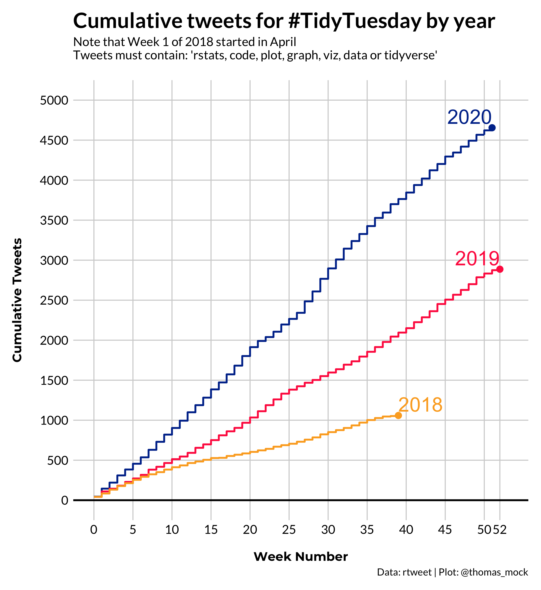

My 2020
2020 was absolutely difficult in a lot of ways, both for the world and for me personally. Rather than focusing on some of the difficulties, I’d rather focus on some of the successes for 2020.
I feel very blessed that my family has stayed happy and healthy, to continue being able to grow into expanded roles at RStudio, that I have had a lot of time with my wife Maria and our dog Howard, and that 2020 is now over. Here’s to hopefully efficient vaccine delivery in 2021, and a safer new year to all!

Growth of #TidyTuesday
TidyTuesday has always been a labor of love for me, and the past 3 years have provided me with such a cool view of the R community, and I believe have helped thousands of learners across the world engage with the R community.
If we’re using the raw Tweet data, it looks like 8,601 unique tweets that reference #TidyTuesday along with some key plotting related words.
Code to reproduce
library(tidyverse)
library(lubridate)
raw_url <- "https://github.com/rfordatascience/tidytuesday/blob/master/tidytuesday_tweets/data.csv?raw=true"
raw_df <- read_csv(raw_url)
raw_df %>%
filter(
str_detect(tolower(text), "rstats|code|plot|graph|viz|data|tidyverse")
) %>%
count()
raw_df %>%
filter(
str_detect(tolower(text), "rstats|code|plot|graph|viz|data|tidyverse")
) %>%
distinct(screen_name) %>% nrow()
sum_df <- raw_df %>%
filter(str_detect(tolower(text), "rstats|code|plot|graph|viz|data|tidyverse")) %>%
mutate(created_date = lubridate::as_date(created_at),
year = year(created_date),
week = week(created_date),
) %>%
count(year, week) %>%
group_by(year) %>%
mutate(roll_n = cumsum(n),
week = if_else(year > 2018, week - 1, week - 14),
year = factor(year, levels = c(2020, 2019, 2018)),
colour = case_when(
year == 2020 ~ "#003399",
year == 2019 ~ "#FF2B4F",
year == 2018 ~ "#fcab27",
TRUE ~ "gray80"
)
) %>%
ungroup()
top_weeks <- sum_df %>%
group_by(year) %>%
arrange(desc(roll_n)) %>%
slice(1)
tt_plot <- ggplot(
sum_df,
aes(x = week, y = roll_n,
color = colour, group = year)
) +
geom_step(size = 1) +
geom_point(data = top_weeks,
aes(col = colour),
size = 2.5, stroke = 1) +
geom_text(data = top_weeks,
aes(label = year),
size = 8, hjust = c(1, 1, 0), nudge_y = 50,
vjust = 0) +
geom_hline(yintercept = 0, size = 1, color = "black") +
scale_y_continuous(breaks = seq(0, 5000, by = 500),
limits = c(0, 5000)) +
scale_x_continuous(breaks = c(seq(0, 50, 5), 52),
limits = c(0, 53)) +
scale_color_identity(aesthetics = c("colour", "fill")) +
labs(x = "\nWeek Number", y = "Cumulative Tweets\n",
caption = "Data: rtweet | Plot: @thomas_mock",
title = "Cumulative tweets for #TidyTuesday by year",
subtitle = "Note that Week 1 of 2018 started in April\nTweets must contain: 'rstats, code, plot, graph, viz, data or tidyverse'\n") +
tomtom::theme_538() +
theme(legend.position = c(0.1, 0.8),
legend.background = element_blank(),
legend.title = element_blank(),
legend.text = element_text(size = 12),
plot.background = element_blank(),
plot.title = element_text(size = 24))
tt_plot
ggsave("tt-plot.png", tt_plot, dpi = "retina")

Re-emphasis on blogging
I had neglected my blog since Jan 2019, but kicked off with a new blog post about simulating optimal strategy for my favorite dice game “10,000”, after seeing some Dave Robinson simulations examples. I have a strong desire to create tutorials/guides so that I can remember things for the future and to help provide some scaffolding for others to learn from as they progress through their data science learning journey.
This really took off in March/April when Texas was heavily in lockdown and I could no longer go out to restaurants or see family. I ended up with a lot of exploration of topics, mostly for the TidyTuesday and the NFL sports analytics communities.
- Beer and PDF tools - a vignette: this one covered extracting tables from many PDFs at once, which we used for a TidyTuesday dataset
- Bigger, nflfastR and dbplyr: with the launch of
nflfastRfor large NFL play-by-play, I put together an example of creating local SQLite databases and querying them viadplyr
- Flipping tibbles for many models: in a previous life, I used
broomto tidy up my stats, and in this post I covered how to run any number of models at one time by nesting dataframes and tidying them up withbroom
In May, I started a “How to make tables with R” series, mostly focused on gt and reactable.
- QB salaries vs Playoff Appearances: A quick example of how to use reactable
- reactable - an interactives tables guide: A proper guide to how to create robust interactive tables with R
- Client-side interactivity - do more with crosstalk: How to combine reactive plots and tables that interact with eachother via
crosstalk, all in R!
- gt - a grammar of tables: How to make beautiful tables with
gt
I also started providing some more general resources on how to use the new tidyr functions to clean up deeply nested JSON, how to use RMarkdown, and some other guides.
- Easily parsing JSON in R with jsonlite and purrr: How to use
tidyr,jsonlite, andpurrrto clean up messy JSON files
- Meta RMarkdown - Taxonomy and Use Cases: A meta-collection on how I thought about RMarkdown and some applications in how to use it in your daily workflows
- Bar Chart 5 ways: an adaption of Andy’s 5 examples of some “cool” bar charts
By August, I was still stuck inside, so I put together a resource on how to start your OWN blog with distill, and some other guides. Eventually, distill got a HUGE update which I provided some ideas to, although all of the real work was done by Alison Hill and the RMarkdown team.
- Build a blog with distill: End-to-end how to guide for building and deploying a blog to netlify for free.
- Heatmaps in ggplot2: Created examples of how to create various heatmaps and some info on when to choose a specific version to avoid overplotting
September kicked off a deeper focus on gt specifically.
- 10+ guidelines for better tables in R: This was an adaption of Jon Schwabish’s “10 Guidelines for better tables” but for R
- Functions and Themes for gt tables: How to create your own themes and/or re-usable functions in
gtto save time and create beautiful tables
- Embedding custom HTML in gt tables: This one was all about using various HTML/CSS to add lots of cool features to
gttables - even sparklines!
In October and November, I spent more time on plotting.
- Embedding points as images in ggplot2: This covered how to plot points as images via
ggtextorggimage, including changing axis-labels
- Bullet char variants in R: How to re-create Brian Burke’s playoff leverage plots, and how to make bullet charts from scratch
In December, I revisited JSON data and more plotting.
- Extracting JSON from websites and public APIs in R: How to find, access, and clean up JSON from various web endpoints like interactive visualizations, embedded into HTML, or from native APIs
- Creating and using custom ggplot2 themes: How to make and then use your own custom themes, adapted from FiveThirtyEight and with 6 examples
For 2021, I’ll be continuing to blog and create technical guides - tweet at me if there’s something you want to see! [@thomas_mock](https://twitter.com/thomas_mock) .
Conferences and Presentations
I gave some conference talks, mostly invited which I can attribute to being engaged with the community and technical blogging.
useR 2020
I was lucky enough to both attend (virtually) and present at my first ever useR! I focused on the #TidyTuesday project, what it’s all about, and how the community has built around it.
So excited to be sharing what the community has built around #TidyTuesday for #useR2020 !
— Tom Mock (@thomas_mock) July 8, 2020
“TidyTuesday: Scaffolding for a Community of Practice”https://t.co/NK3PKMACde
Slides: https://t.co/PAs1uruopZ#rstats
NYC R
Got to attend and present at my first NYC R conference, focused on doing more with RMarkdown!
Really excited to talk about #rstats + RMarkdown for #rstatsnyc in about an hr!
— Tom Mock (@thomas_mock) August 15, 2020
Slides at: https://t.co/AYSprYoK9d if you want to follow along or maybe live tweet!
Companion blog post: https://t.co/a6DbT0AA6c pic.twitter.com/5SQfrHjFim
Hockey Analytics Night in Canada: NFL Edition
I was honored to be invited to and present at HANICx NFL, and after running a poll decided to present on the most requested topic: tidymodels!
- Slides: A short intro presentation on using
tidymodelsto predict whether the opposing team will run or pass
- Recording
NHS R Conference
Gave an adapted version of my RMarkdown presentation for the NHS R community, enjoyed the chatter in the live groups there!
Really enjoyed giving my presentation on Marvelous RMarkdown for the #NHSRconf2020 w/ #RStats !
— Tom Mock (@thomas_mock) November 12, 2020
Slides: https://t.co/AYSprYoK9d
Companion Blogpost: https://t.co/a6DbT0AA6c
RMarkdown Cookbook: https://t.co/Ce43CUlPBg
Carnegie Mellon Sports Analytics Conference
Gave my first public workshop for the CMSAC team, big thanks to Ron Yorko for the invite! I’ve always wanted to attend this conference and was deeply honored to join as a workshop presenter.
Tables Presentation
Gave a 60 min presentation on “Beautiful Tables in R”
Personal
I survived, along with my very patient wife Maria, and our dog Howard!

- We played a lot of Mario Kart on our Switch 🎮
- I beat Zelda: Breath of the Wild (but am nowhere near all the Korok seeds) 🏆
- I cut my own hair 7 times so far this year 💇♂️
- We spent a lot of time indoors or in the outdoors but isolated 🌲
- We ate a lot of takeout at home 🥘
- We voted 🇺🇸
- We wore a LOT of masks 😷
I’m looking forward to some rest, and then a refresh for 2021!
Blessings to you and yours, and happy New Year!